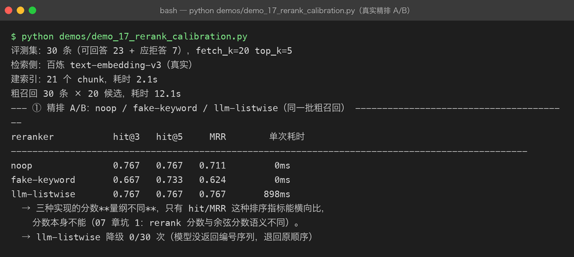
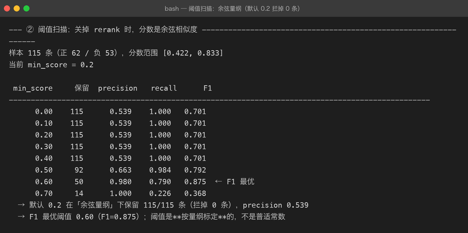
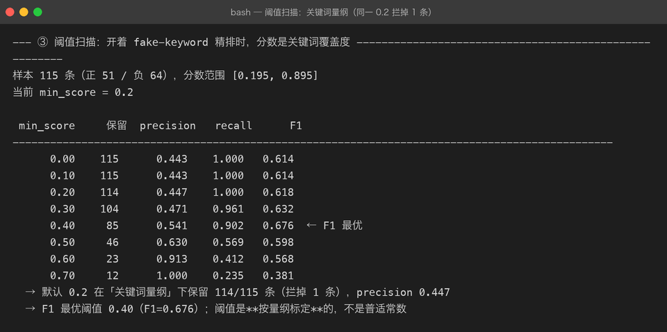
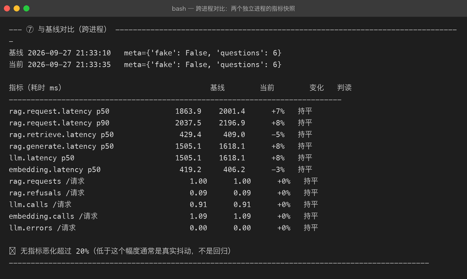

Milestone 16 — 真实 Reranker 与阈值校准
15 章的可观测性报告留下两个尾巴：
min_score=0.2对百炼 embedding 形同虚设（30 个召回样本最低 0.228，一条没拦），以及「接入真实 reranker」一直挂在做不了的状态。这一章把两个都收掉。
1. 先交代一件事：cross-encoder 为什么没接上
原计划是接真实的 cross-encoder 精排（bge-reranker-v2-m3），但两条路都走不通：
| 尝试 | 结果 |
|---|---|
SiliconFlow bge-reranker-v2-m3 | 本机没有 SILICONFLOW_API_KEY |
百炼 gte-rerank | 403 AccessDenied（账号未开通该服务） |
百炼 text-rerank-v2 | 400 Model not exist |
结论：cross-encoder 路线在本机做不了真实验证。与其在文档里假装接了真实 reranker，不如换一条真实能调通的路线——用 DeepSeek 做 listwise 精排（LLM-as-reranker，工业界的成熟备选）。这不是降级凑数：它同样是「把 query 和候选一起送进模型、让模型判断相关性」的 cross-encoder 思想，只是判断者是生成模型而不是打分头。
先验证能力再动手（不写没跑过的结论）：
输入：1 个问题 + 5 条候选（生成器/装饰器/GIL/迭代器）
输出：'0,2,4' —— 恰好是三条生成器相关的片段
耗时 0.82s，157 token（其中 completion 只有 5 个）排序准确，成本极低（completion 只有编号）。真实可用，这才落地成 LLMReranker。

2. LLMReranker 的设计
class LLMReranker(BaseReranker):
def __init__(self, llm, max_candidates=12, max_doc_chars=300): ...三个必须写清楚的设计决策：
① 分数只表达名次，不表达置信度。 LLM 不给分，这里按名次线性递减造一个分数（1.0, 0.95, …）。它只能用于排序——不能拿它设 min_score 阈值，也不能和余弦分数比大小。这是它和 cross-encoder 最大的差距：cross-encoder 的 relevance_score 至少还能扫阈值，listwise 的名次分什么都不能扫。
② 解析失败降级为原顺序，服务故障才抛错。 两者必须分开：模型没按格式答（返回空串、废话）是模型行为，降级重排为原顺序照样可用，不该打断整条问答链路；而 API 超时/断连是服务故障，要抛 RerankError 让接入层决定降级策略。首跑 30 条出现过 1 次空串降级，重跑 0 次——偶发，但正因为偶发，降级路径必须存在且可观测（reranker.degraded 计数，见截图第 14 行）。
③ 解析要容错。 2,2,99,0 → 重复编号去重、越界编号丢弃、没被点名的候选按原顺序垫底。宁可排序质量降级，不能丢候选（max_candidates 截掉的候选也按原顺序补回来，保证 rerank 只改顺序不改集合）。
3. 精排 A/B：真实结论出乎意料
同一批粗召回（30 条 EvalCase × fetch_k=20），三种实现在检索侧指标的对照：
| reranker | hit@3 | hit@5 | MRR | 单次耗时 |
|---|---|---|---|---|
| noop（不精排） | 0.767 | 0.767 | 0.711 | 0ms |
| fake-keyword | 0.667 | 0.733 | 0.624 | 0ms |
| llm-listwise | 0.767 | 0.767 | 0.767 | 898ms |
三个真实发现：
- 「有精排」不等于「更准」。 fake-keyword 这种朴素关键词覆盖度精排在真实 embedding 上反而把 MRR 从 0.711 拉到 0.624——它按「query 词命中比例」打分，会把长而沾边的片段顶到前面，把真正答案挤下去。离线替身里看起来合理的启发式，上真实数据可能是有害的。
- LLM 精排的收益形态是「往前挪」而不是「捞回来」。 hit@3 / hit@5 与 noop 持平（0.767），但 MRR 从 0.711 → 0.767：正确文档没有变多，只是平均排位更靠前了。收益 +8%，代价 898ms/次——值不值取决于业务在意首条命中率还是平均排位，这个数字让决策有依据。
- 评估刻意只测检索侧。 rerank 影响的是「哪些片段进 prompt」，和生成质量无关。30 条 × 3 种配置都真实生成一遍，既慢又贵，还会把生成抖动（14 章已证明：同一问题连问 5 次有 4 种答案）混进检索差异里。
4. 阈值校准：用正负样本扫描，不拍脑袋
标注方式不用人工：expected_source 命中的候选即正样本，其余即负样本（拒答案例的占位符全部排除）。只扫「rerank + 截断 top_k 之后」的候选——因为 min_score 只在这个位置生效，扫全库候选没有意义。


| 量纲 | 分数范围 | 默认 0.2 拦掉 | F1 最优阈值 | precision / recall |
|---|---|---|---|---|
| 余弦（关精排） | [0.422, 0.833] | 0 条 | 0.60 | 0.980 / 0.790 |
| 关键词覆盖（开 fake 精排） | [0.195, 0.895] | 1 条 | 0.40 | 0.541 / 0.902 |
这组数字把 15 章的「形同虚设」量化成了可执行的结论：
- 余弦量纲下 0.2 一条都拦不住：最低分 0.422，是阈值的 2.1 倍。百炼 embedding 的余弦分数整体偏高，阈值必须贴着实际分布的下沿定（本例 0.60，F1 从 0.701 提到 0.875）。
- 同一个 0.2，换一个精排量纲含义全变：0.2 在关键词覆盖度上是个死门槛（把 0.195 的片段拦掉），在余弦上是什么都不拦。阈值不是常数，是「分数产生方式」的函数——换 embedding 或换 reranker 都必须重新扫一遍。
- 阈值提得太狠会翻车：0.70 时 precision 1.000 但 recall 只剩 0.226——拦噪声拦到把答案也拦了。
口径纪律：① 阈值绑定「分数是谁产生的」；② 实现之间只比 hit/MRR 排序指标，分数绝对值不跨实现比；③ 阈值扫描只扫进 prompt 的那几条。
5. 指标落盘：跨进程对比
15 章的指标只活在单进程内存里，MetricsRegistry 现在补上三件套：save(path) / load(path) / render_diff(base, curr)。
设计要点：
- 落盘存摘要不存原始样本：几万条耗时样本全写盘要好几 MB，而对比只需要分位数；也避免把单条请求数据落到盘上。
- 快照内部一律存秒，渲染和对比时才 ×1000 转毫秒。第一版
render_diff直接拿快照值打印，0.25 秒会印成0.25看着像 250ms——差点造出一个 1000 倍量纲 bug，靠单测（p50 == 0.25而不是250.0）锁住。 - 计数器折算成「每次请求」再比：问 6 题和问 20 题的
llm.calls总数没有可比性。 - 报警线 20% 而不是 5%：真实 LLM 的 p50 本身就有 ±15% 抖动，阈值低于抖动幅度只会天天误报——报警要报在噪声之上。
真实跑两次独立进程（间隔 25s）验证：

p50 1863.9ms → 2001.4ms（+7%），判定持平不报警；llm.calls/请求 0.91 → 0.91 完全一致。回归检测要的就是这种「真抖动不报、真恶化才报」的行为。
6. 使用的 API 与踩坑记录
| # | 踩坑 | 证据与处理 |
|---|---|---|
| 1 | 百炼 rerank 账号未开通，gte-rerank 返回 403；text-rerank-v2 模型不存在 | 探测后再写代码；本机没有 cross-encoder 可用 → 落地 LLMReranker（DeepSeek listwise，先小样本验证排序能力） |
| 2 | LLM rerank 偶发返回空串（首跑 30 条出现 1 次） | 降级为原顺序 + degraded 计数可观测；不能让一次格式抖动打断链路 |
| 3 | fake-keyword 精排在真实 embedding 上 MRR 反降 0.711 → 0.624 | 离线启发式上真实数据可能有害；精排要 A/B，不能「加了就信」 |
| 4 | listwise 名次分没有置信度语义 | 分数只保证单调递减；对它设 min_score 毫无意义 |
| 5 | 快照存秒、报告印毫秒，render_diff 第一版直接印快照值 | 对比前统一 ×1000；用单测锁 p50 == 0.25（秒） |
| 6 | 同一 min_score 在两个量纲下行为完全不同 | 阈值是「分数产生方式」的函数，换模型必须重扫 |
7. 交付物清单
src/rag/reranker.py：新增LLMReranker（真实 DeepSeek listwise）+_parse_ranking解析容错 + 工厂支持provider="llm"src/rag/cli.py：build_components新增reranker=（显式指定精排实现）与min_score=（阈值注入）参数src/rag/metrics.py：新增save/load/render_diff（跨进程对比，20% 容忍带 + 每请求折算）demos/demo_17_rerank_calibration.py：真实 A/B + 双量纲阈值扫描；demo_16_metrics.py新增--save/--baselinetests/test_reranker.py+6 项、tests/test_metrics.py+5 项（166 → 177 项全绿）- 4 张真实运行截图：
term-rerank-ab.png、term-threshold-cosine.png、term-threshold-rerank.png、term-metrics-diff.png
8. 自检清单
- [x] 每个结论都有真实运行截图或表格数字支撑
- [x] rerank 只改顺序不改集合（
max_candidates之外的候选不会丢）有测试 - [x] 解析失败降级 / 服务故障抛错两条路径分开，各有测试
- [x] 阈值结论标注了适用量纲，不冒充普适常数
- [x] 跨进程对比真实跑过两个进程，验证「不误报」行为
- [x]
check_links.py --strict无死链坏图